Run folder: demo_mine · 3 hazard events · 15 sweep images
| run | demo_mine |
|---|---|
| world | mine |
| scenario | mine |
| seed | 1 |
| duration_s | 90.56 |
| path_length_m | 12.396 |
| collisions | 0 |
| collision_events | [] |
| fell_in_pit | False |
| fell_at_s | None |
| final_position | [8.6, 4.123, 0.065] |
| final_level | CAUTION |
| final_reason | GAS_ELEVATED |
| final_mode | AUTO |
| final_nav | HOLD |
| final_note | holding: GAS_BUILDUP (press R to resume) |
| hazards_seen | ["SAFE CLEAR", "SAFE OBSTACLE", "CAUTION FLOOR_LOST", "CAUTION GAS_ELEVATED", "DANGER GAS_BUILDUP"] |
| nav_states_seen | ["CALIBRATING", "CRUISE", "AVOID", "SWEEP", "BACKOFF", "HOLD"] |
| hazard_timeline | [[0.06, "SAFE", "CLEAR"], [17.16, "SAFE", "OBSTACLE"], [17.46, "SAFE", "CLEAR"], [23.16, "CAUTION", "FLOOR_LOST"], [36.46, "SAFE", "OBSTACLE"], [37.16, "SAFE", "CLEAR"], [63.11, "CAUTION", "GAS_ELEVATED"], [76.31, "DANGER", "GAS_BUILDUP"], [83.76, "CAUTION", "GAS_ELEVATED"]] |
| sweep_images | 15 |
| sweeps | 3 |
| impacts | 0 |
| regions_reached | {"past_pit": 44.06, "tunnel_b": 53.49} |
| rocks_dropped | 0 |
| max_gas_ppm_at_rover | 1106.0 |
| min_distance_to_gas_m | 1.28 |
| attitude_filter_max_error_deg | {"pitch": 2.74, "roll": 0.88, "yaw_drift": 0.77} |
| screenshots | ["shots/00_overview.jpg", "shots/02_t003.0_start.jpg", "shots/03_t034.3_CAUTION_FLOOR_LOST.jpg", "shots/04_t074.3_CAUTION_GAS_ELEVATED.jpg", "shots/05_t087.5_DANGER_GAS_BUILDUP.jpg", "shots/06_t087.5_CAUTION_GAS_ELEVATED.jpg"] |
| video | run.mp4 |
| checks | [{"check": "collisions <= 0", "ok": true, "detail": "0 collision(s) []"}, {"check": "never falls in a pit", "ok": true, "detail": "min z 0.065"}, {"check": "reaches 'past_pit'", "ok": true, "detail": "t=44.06"}, {"check": "reaches 'tunnel_b'", "ok": true, "detail": "t=53.49"}, {"check": "reported DANGER GAS_BUILDUP", "ok": true, "detail": "seen: ['SAFE CLEAR', 'SAFE OBSTACLE', 'CAUTION FLOOR_LOST', 'CAUTION GAS_ELEVATED', 'DANGER GAS_BUILDUP']"}, {"check": "ends in HOLD", "ok": true, "detail": "final nav HOLD (holding: GAS_BUILDUP (press R to resume))"}, {"check": "stops within 2.5 m of the gas source", "ok": true, "detail": "1.28 m"}] |
| passed | True |
response=pit / no floor: back off, reroute, gas_ppm=0.0, gas_slope=0.3, front_m=0.97, tilt_deg=0.1
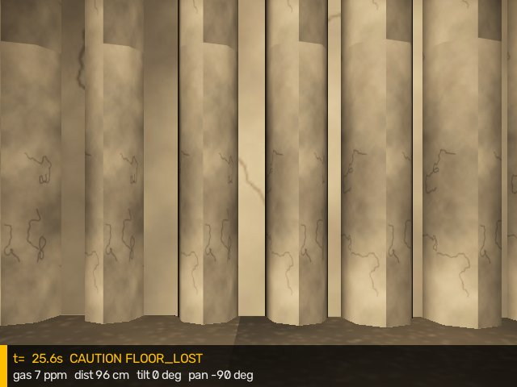
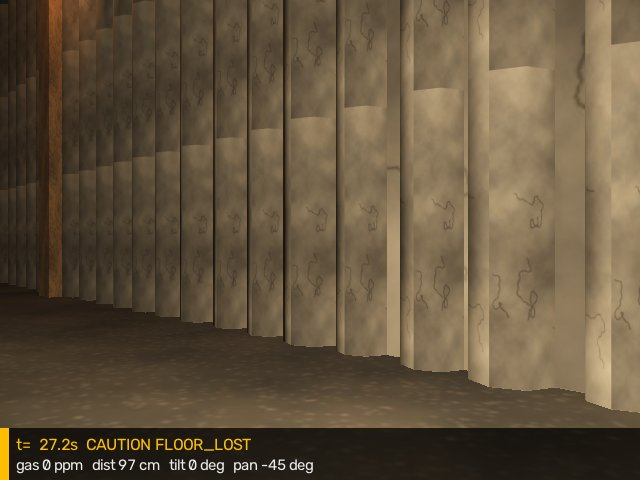
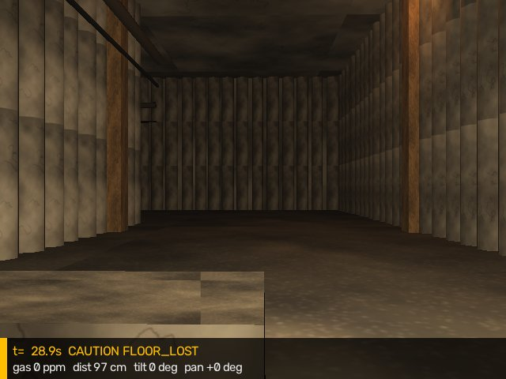
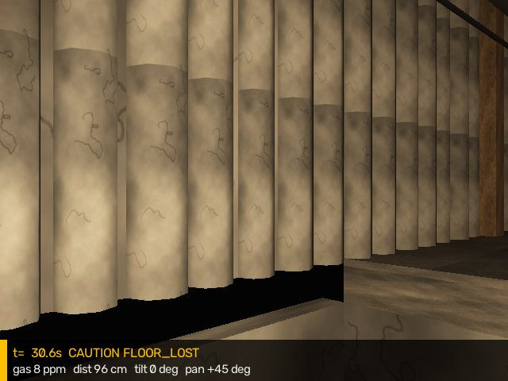
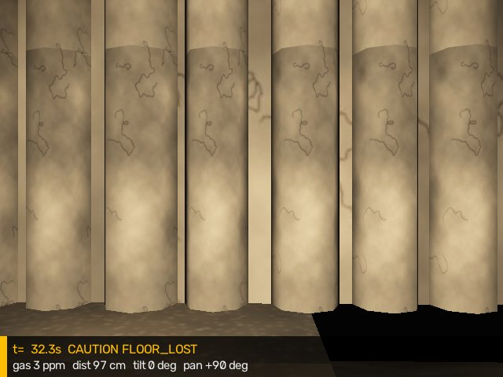
response=gas elevated: proceed with caution, gas_ppm=301.1, gas_slope=69.8, front_m=0.95, tilt_deg=0.2
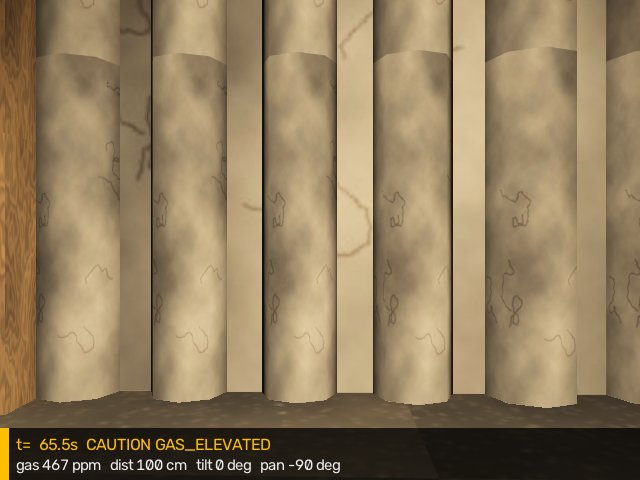
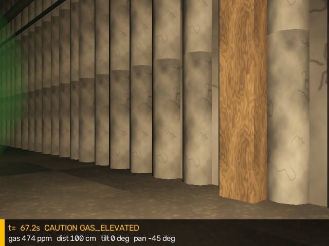
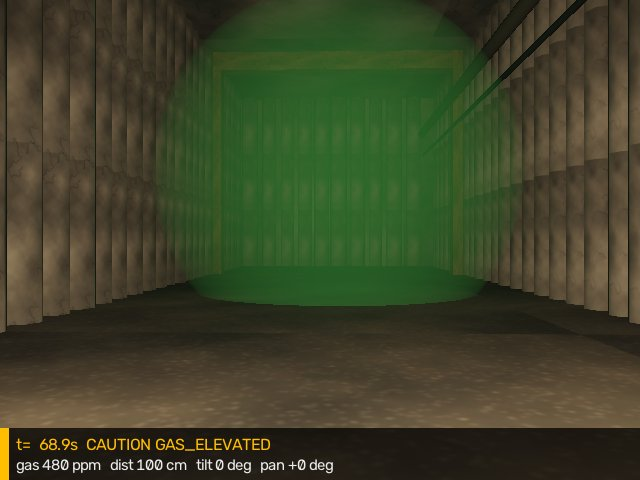
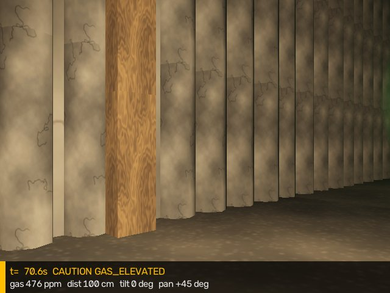
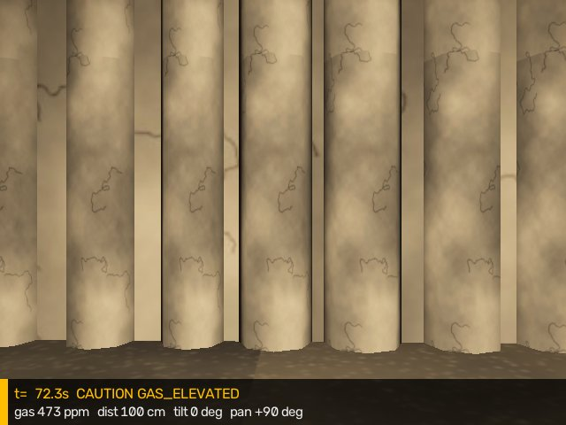
response=gas build-up: stop, alert, gas_ppm=806.2, gas_slope=62.6, front_m=0.95, tilt_deg=0.0
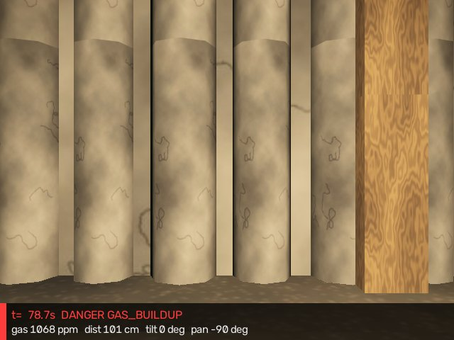
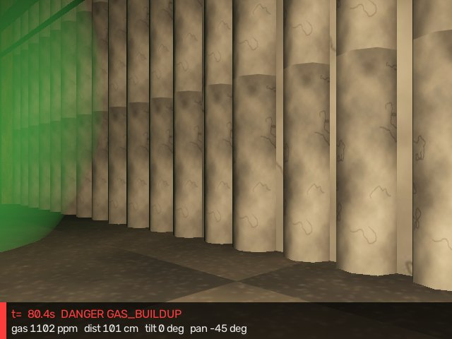
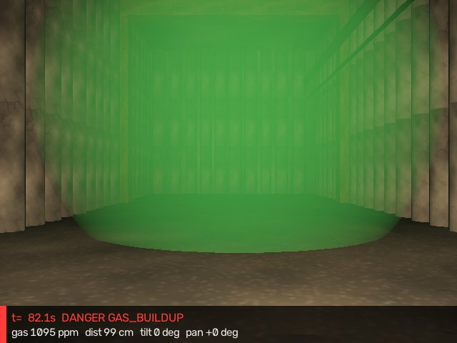
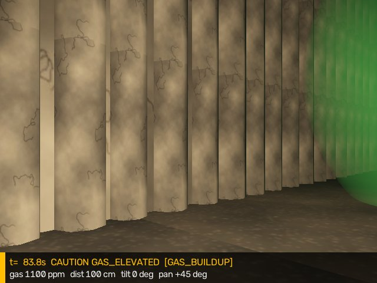
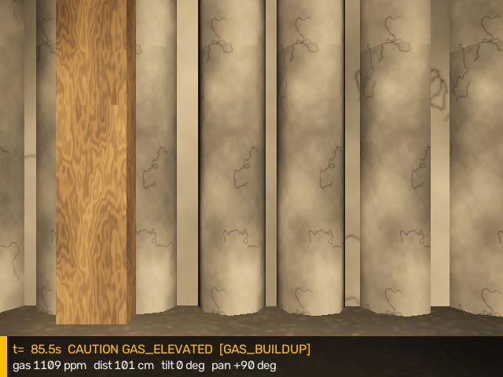
| t (s) | mode | state | note |
|---|---|---|---|
| 0.06 | AUTO | CALIBRATING | calibrating gyro / warming up |
| 2.1 | AUTO | CRUISE | cruise (centring) |
| 17.16 | AUTO | AVOID | avoid: spin right |
| 17.71 | AUTO | CRUISE | steer left |
| 23.16 | AUTO | SWEEP | backoff: FLOOR_LOST (left) |
| 34.36 | AUTO | BACKOFF | backoff: FLOOR_LOST (left) |
| 37.3 | AUTO | CRUISE | steer left |
| 63.11 | AUTO | SWEEP | cruise |
| 74.36 | AUTO | CRUISE | cruise (centring) |
| 76.31 | AUTO | SWEEP | holding: GAS_BUILDUP (press R to resume) |
| 87.56 | AUTO | HOLD | holding: GAS_BUILDUP (press R to resume) |
Files: hazard_log.csv, events.jsonl, metrics.json, sweeps/